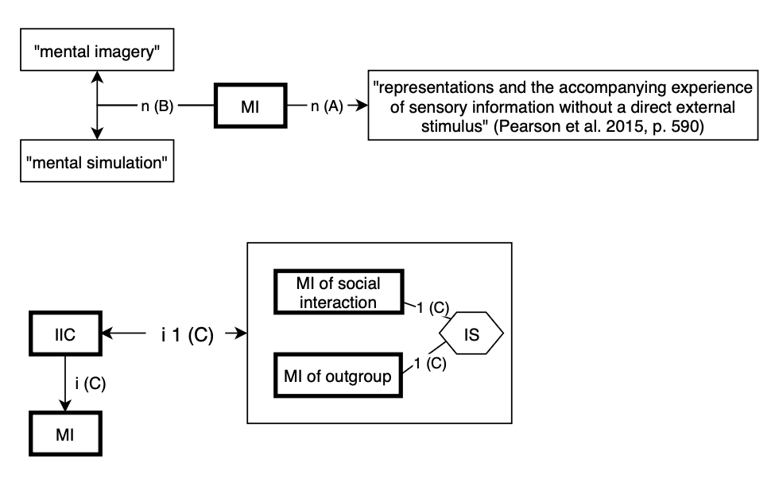

Session 9 - Step 2 in TCM
We do the second step of TCM of our chosen theory: Identify relevant phenomena
1 Reminder: TCM steps
- Identify definitions of constructs and relevant phenomena
- TODAY: Formulate a prototheory: Create a VAST display
- Develop a formal model
- Check the adequacy of the formal model
- Evaluate the overall worth of the constructed theory
2 TCM Step 2: Formulate a prototheory / Sketch the existing verbal theory
Goal: Capture the core theoretical relationships - as proposed by the original authors - in a VAST display.
2.1 Concrete steps
- Search the literature for theoretical statements about relationships between constructs (only our focal constructs).
- Deliverable 1:
- Enter the theoretical statements in a table
- Do this in a granular way: each table cell/box should only contain a single statement (which later get connected with different types of relationships). You can split long original sentences into separate atomic statements.
- Back up all decisions with evidence (e.g., with direct quotes) or justifications (e.g., for deviations from the literature, or when the literature is ambiguous, or when you had to fill a gap). These justifications go into a narrative text that accompanies the VAST display.
- Assign a unique ID to each statement. In the VAST display, add the ID to each relationship.
- When you have to extend the original theory, or make some relationships more precise, add the new statements to the table, clearly indicate that this is a new statement from you, and also give it an ID.
- Enter the theoretical statements in a table
- Deliverable 2: Extend your existing VAST display. Concerning the arrows, make use of all possible relationship types (where appropriate). Not just “naming (n)” and “causation (c)”, but also:
- Conceptual Implication (i)
- Transformation (t)
- Prediction (p)
- Reasoning (r)
- Deliverable 3: Write a short paragraph with a meta-assessment of the task: How easy / feasible was it to find and extract the theoretical statements, and to convert them into a VAST display? What were the hurdles? What features of the primary literature were (not) helpful?
2.1.1 Example
2.1.1.1 Table with definitions, statements, and IDs
| ID | Quote | Reference | Type of relationship | Comment |
|---|---|---|---|---|
| A | Mental imagery are “representations and the accompanying experience of sensory information without a direct external stimulus” | Pearson et al. 2015, p. 590 | n (naming/ definition) | |
| B | mental imagery = mental simulation = MI | (no reference: We inferred that from the text) | n | two exchangeable naming relationships for the same construct “MI” |
| C | “Imagined intergroup contact is the mental simulation of a social interaction with a member or members of an outgroup category.” | Crisp & Turner, 2009, p. 234 | conceptual implication i |
2.1.1.2 VAST display
The corresponding IDs from the “statement table” are shown in parentheses at each relationship arrow.

2.1.2 Notes:
A conceptual implication contains multiple cases:
- hierarchical relationships between categories (being a dog conceptually implies being an animal)
- but also attributes: Being a “sun” conceptually implies “being hot”